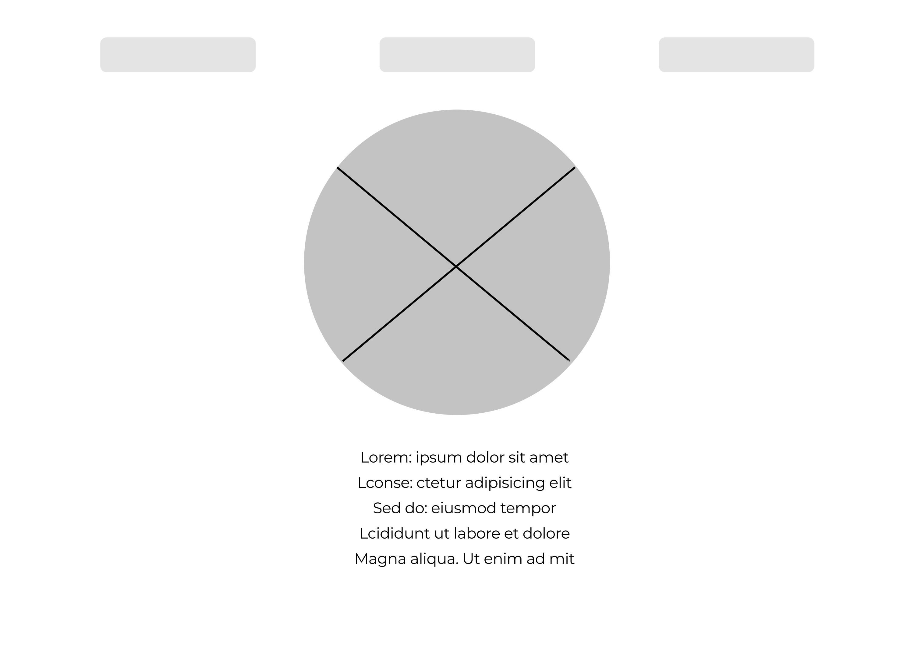

A weboldal tervei
Az eredeti ötlet Figma programmal készült. Történtek változtatások a megvalósítás során, melynek esztétikai és praktikai okai egyaránt voltak.
A reszponzivitás is figyelmet kapott.
Ezt megelőzően nem volt alkalmam akárcsak hasonló feladatot is végrehajtani, így menet közben minden lépés felmerülő problémának számított. Nem tudtam megoldani például, hogy ezen az oldalon vékonyabbak legyenek a paragrafusok betűi. Különös nehézségeket jelentett, hogy Mac laptop a jelenleg rendelkezésemre álló eszköz.
Segédletek:
- Figma
- W3schools
- Google Fonts
- Coolors
- Contrastchecker
- Youtube